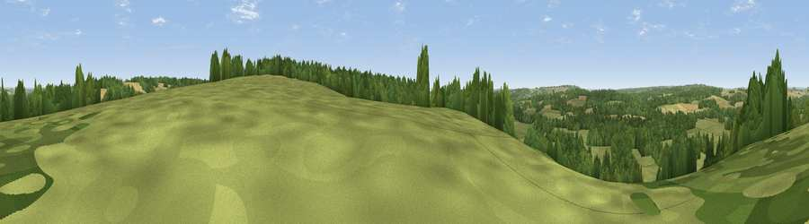

Viewpoint near Mottisfont
#29185 in England · top 30% of its area beats it · near MottisfontThe view, rendered

A 360° render of this exact spot computed from the terrain model, tree cover and land cover — summer colours, afternoon light, calibrated against photographs of famous viewpoints. Real trees, hedges and buildings will differ in detail.
The panorama
Grey silhouette: terrain skyline in each direction (720 bearings, Earth curvature and refraction included). Dashed green: skyline with trees (+15 m) and buildings (+8 m) as obstacles. Blue strip: how far the ground is visible on each bearing.
Where the view opens
Wedge length = distance to the farthest visible ground on that bearing (vegetation-aware). Rings at 10, 25 and 50 km.
What fills the view
44% grassland · 37% woodland · 19% cropland
Angular shares of the visible panorama (visual magnitude), not map area. Landscape diversity 0.46 (0–1 Shannon).
Key numbers
More beautiful places nearby
The staircase of upgrades: each row has a higher view potential than everything closer. Driving times are estimates from straight-line distance, calibrated against real road routing — check an actual route before setting out.
| Place | Direction | Drive | Score |
|---|---|---|---|
| Viewpoint near Houghton | NNW · 3 km | ~8 min | 45.9 |
| Viewpoint near King's Somborne | ENE · 4 km | ~10 min | 49.0 |
| Viewpoint near King's Somborne | E · 6 km | ~12 min | 61.3 |
| Viewpoint near Sparsholt | E · 6 km | ~13 min | 66.9 |
| Viewpoint near Bulford | NW · 21 km | ~35 min | 70.3 |
| Beacon Hill | ESE · 27 km | ~43 min | 71.7 |
| Viewpoint near Meonstoke | ESE · 31 km | ~48 min | 74.8 |
| Beacon Hill | NNE · 31 km | ~49 min | 76.7 |
51.05236, -1.51309 · source: screening · position refined by local search. Computed location — check access rights before visiting.